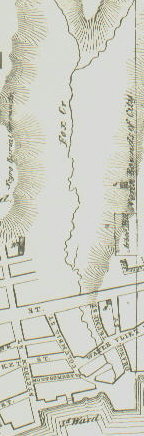

|
Foxes Creek is the late eighteenth-century name for the east-flowing stream or creek that rose some blocks above today's Lark Street, cut a deep ravine as it flowed through the north side of the city, ran across North Pearl and North Market Streets, and emptied into the Hudson. Previously, the New Netherland Dutch had called it the Vozenkill or Vossenkil. Later, it was called "Foxes Creek." By the early 1800s, a mud-and-dust road known as Fox Street ran along the south side of the stream. Later, the waterway was piped and diverted to flow behind the houses on the north side of the street then named Canal Street. Today, Fox/Canal Street is Sheridan Avenue and it ends at North Pearl Street. Foxes Creek had three functional parts. By the 1750s, the most choice locations were built on the Hudson River flood plain below Pearl Street. These working class homes dotted the landscape beyond the city's central core. By the end of the colonial period, tanning pits had been set up to access the flow of Foxes Creek. This area with an indistinct northern border was called "The Woutenbergh." During the 1780s, the area was further developed as more intensive construction extended north from the core city. The buildings east of Market Street were destroyed by fire in 1797. More permanent, urban construction followed. Van Tromp Street - running between Market and Pearl, was laid out north of Foxes Creek and filled in with new buildings during the early 1800s.
Above today's Chapel Street, the stream cut deeply into the hillside - leaving a steep grade on the south side and a gradual slope to the north. In 1797, much of that land was subdivided and sold to new owners who built along the creek, diverted its flow to run between Fox and Van Schaick (today's Monroe) Streets, and built small homes on Orange Street as well. With the Beaverkill and the Ruttenkill, Foxes Creek represented a major divider or break in the settlement of the city above Pearl Street. Initially passed over in the spread of the city north and south of State Street, by the late eighteenth-century those eroded and often treacherous areas were being reclaimed for marginal housing as well.
Detail from the engraved version of the De Witt Map of 1790 showing the route of Fox Creek. Note how it displays the outlet of the stream as beneath the North Dock. Houses along North Pearl Street during the early 1800s as recalled in a drawing by James Eights. Printed in Bicentennial History of Albany, in a section entitled "Some Views in Albany About 1800," 666-74. last revised 10/10/07 |